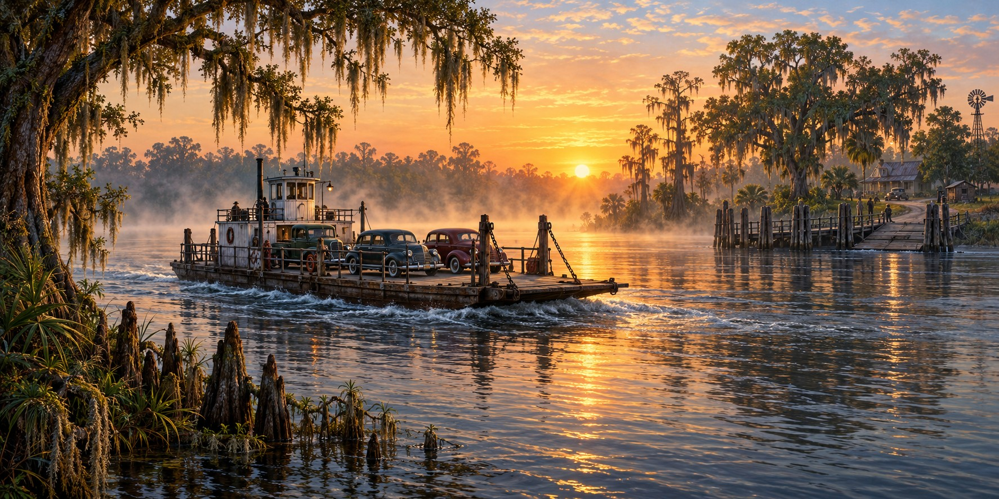

When the Ferries Stopped Running
Before Florida Had Bridges, It Had Boats, and Storms Took Those Too

“This is the last of the Mohicans, I swear,” Captain Clayton Mills said from the wheelhouse of the Blackbeard, waiting for cars to board the Mayport ferry. “Florida is runnin’ out of ferries.” Mills had crossed the St. Johns River between Mayport and Fort George Island for years by the time a reporter found him in 1994. This article is about that humbler, older way across Florida’s water: the ferry, and the storms, wars and budgets that ended so many of them.
An Old St Johns River Crossing
The Fort Gates Ferry, linking the east and west banks of the St. Johns River near Pomona Park and the Ocala National Forest, traces its history to an 1853 crossing. The Confederate Army used it during the Civil War. Its current vessel, a barge pushed by a tugboat converted from a 1910 sailboat, entered service in 1914.
Accounts of the crossing describe interruptions after hurricanes, including Gladys and Irma. Those episodes illustrate how a service can have a long history without running continuously. Historic founding dates alone do not establish its current operating status.
A Bay Too Wide to Drive Around Quickly
Before any bridge spanned Tampa Bay, crossing from St. Petersburg to Manatee County meant a fifty-mile detour through Tampa or a ferry. The Bee Line carried vehicles across the bay by the late 1920s. The ferry cut the trip from fifty miles and about three hours to twenty-two miles and about an hour on the water, though waiting to load could add another three or four hours.
By 1941 the Bee Line ran four boats and carried nearly one hundred thousand vehicles. War, not weather, stopped it: in 1942 crews were called into military service and the boats were converted for wartime use.
A Bridge That Made a Ferry Obsolete
The St. Petersburg Port Authority bought the Bee Line franchise in 1944 and ran limited service through the war and for about a decade after. What ended it for good was a bridge: the original Sunshine Skyway, dedicated on September 6, 1954.
Tampa Bay’s open water stayed dangerous even so. On May 9, 1980, a sudden violent storm cut visibility to almost nothing as the freighter Summit Venture approached the Skyway. Pilot John Lerro later testified that he could not see the bow of his own ship. The ship struck a support pier, collapsing a section of the southbound span and killing thirty-five people, most aboard a Greyhound bus that drove into the gap. The disaster focused attention on protecting bridge supports from ship impacts.
The Ferry Florida Almost Let Die
The Mayport, or St. Johns River, Ferry has run since 1874 and was still carrying cars in the early 1990s. When a 1989 ice storm shut every bridge in Jacksonville, Captain Mills said, the ferry simply kept running.
It came closer to extinction from a budget spreadsheet. In 1991, facing a billion-dollar state shortfall, the Legislature targeted the ferry, which was losing roughly six hundred thousand dollars a year, and Governor Lawton Chiles questioned whether it was needed. A “Save the Ferry” campaign of barbecues, petitions and letters, some from people who might never ride it, called the ferry “a charming and romantic relic of an older, more innocent Florida.” Congress awarded a $2.5 million grant, and the ferry kept running.
What Storms Actually Did to Florida’s Ferries
Storms damaged Florida’s ferries directly and repeatedly: Gladys in 1968, Irma in 2017. But storms were never the main reason ferry service ended. War closed the Bee Line in 1942. A bridge made it obsolete in 1954. A budget crisis nearly closed Mayport in 1991. The ferries that remain survive less because they proved more storm-resistant than the ones that vanished, and more because the communities they serve, at Mayport and Fort Gates among them, never received a bridge.
Quick Facts
| Fort Gates Ferry | Historic crossing dates to 1853; founding date does not prove uninterrupted service |
|---|---|
| Mayport Ferry | Historic St. Johns crossing; JTA assumed operation in 2016 |
| Bee Line Ferry | Carried vehicles across Tampa Bay from the late 1920s; ceased when Skyway opened in 1954 |
| Bee Line ended | Suspended 1942 for war; ended by the Sunshine Skyway, September 6, 1954 |
| Gladys (1968) | Historic accounts report damage to the Fort Gates crossing |
| Irma (2017) | Historic accounts report damage and service interruption |
| Mayport, 1989 | Ice storm closed every bridge in Jacksonville; the ferry kept running |
| Mayport, 1991 | Budget cut threatened; saved by public campaign and a $2.5 million grant |
| Skyway, 1980 | Summit Venture collision in a sudden storm; 35 died |
Did You Know?
The Fort Gates ferry was used by the Confederate Army during the Civil War.
Waiting for the Tampa Bay ferry to load could take longer than the ride across.
A budget fight, not a hurricane, nearly ended the Mayport ferry.
Vocabulary
Ferry: a boat or barge that carries passengers or vehicles across a body of water on a regular route.
Franchise: the legal right to operate a service in a given place.
Navigable waters: waterways deep and open enough for ships to travel.
Discussion Questions
1. Why did bridges, wars and budgets end more ferries than storms did?
2. What made the Mayport ferry worth saving to people who might never ride it?
Related Articles
FLH-0030 — The Storm That Destroyed Flagler’s Railroad
FLH-0031 — Shipwrecks of the Florida Coast
FLH-0011 — Hurricane Irma (2017)
Sources
Tampa Bay Times (archive). “Crossing a River and Eras.” (Captain Clayton Mills). tampabay.com
The Gabber Newspaper. “A New Way to Cross Tampa Bay: 70 Years of the Sunshine Skyway Bridge.” thegabber.com
StructureMag. “Tampa Bay (Sunshine Skyway) Bridge Disaster.” structuremag.org
Wikipedia. “Fort Gates Ferry,” “Mayport Ferry,” and “Sunshine Skyway Bridge.”
NPS — Florida historic highway bridges and Fort Gates crossing
NTSB — Summit Venture bridge collision, May 9, 1980